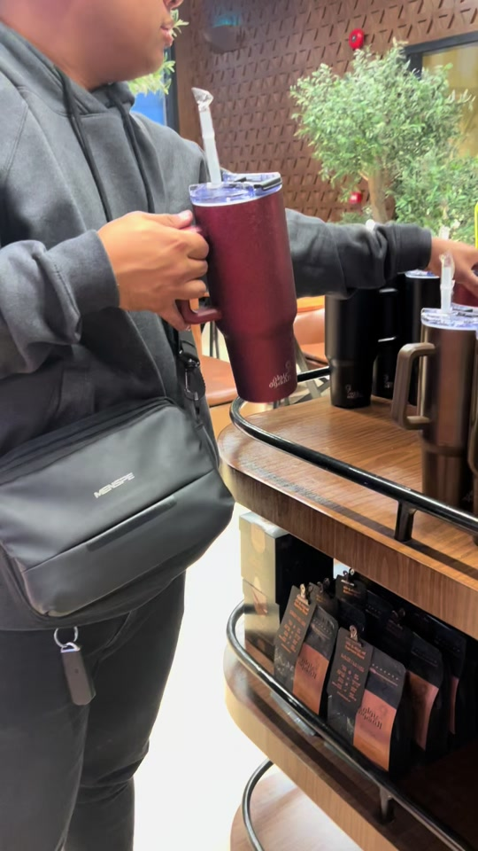
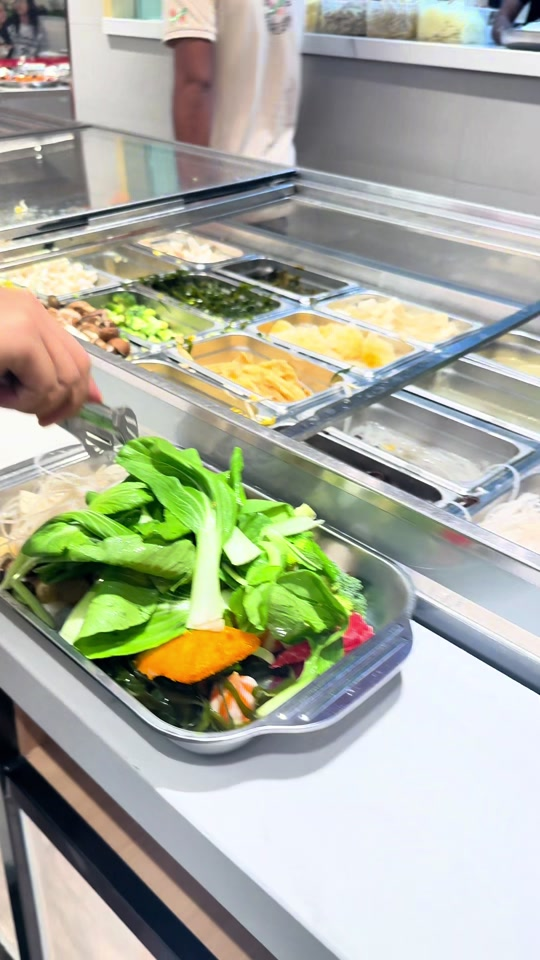
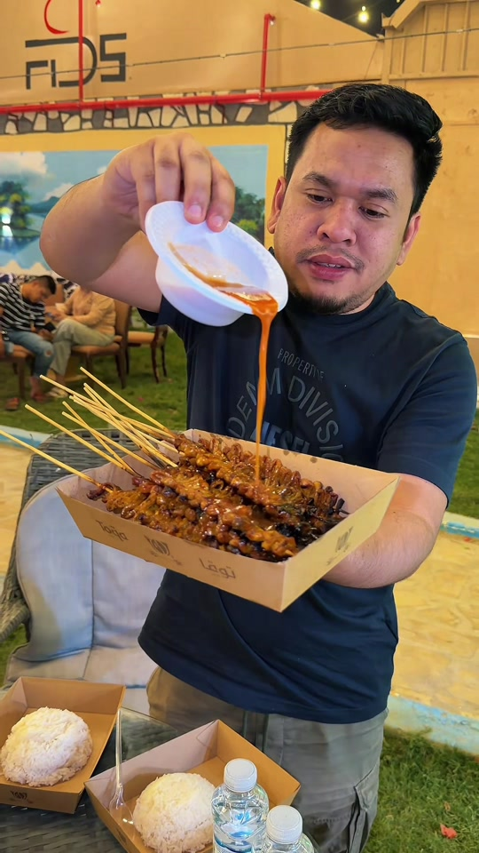
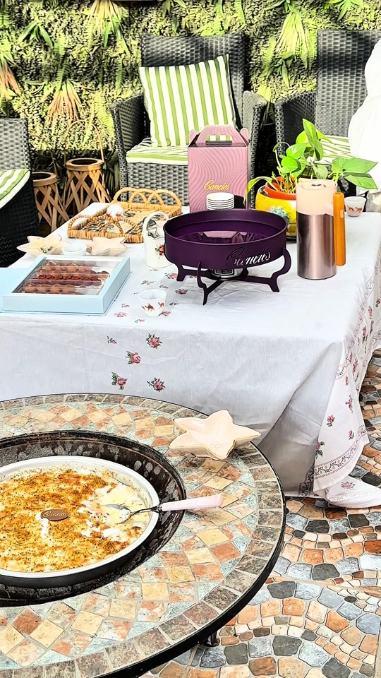
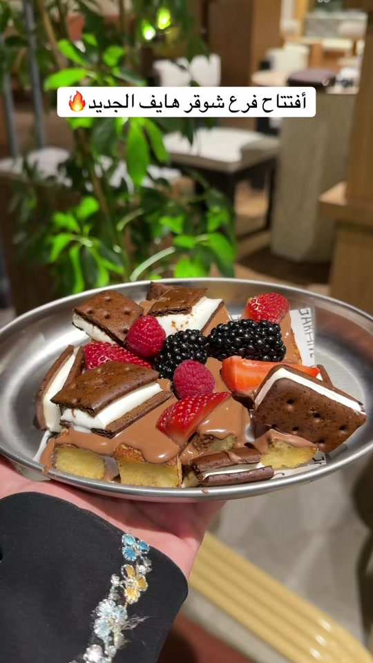
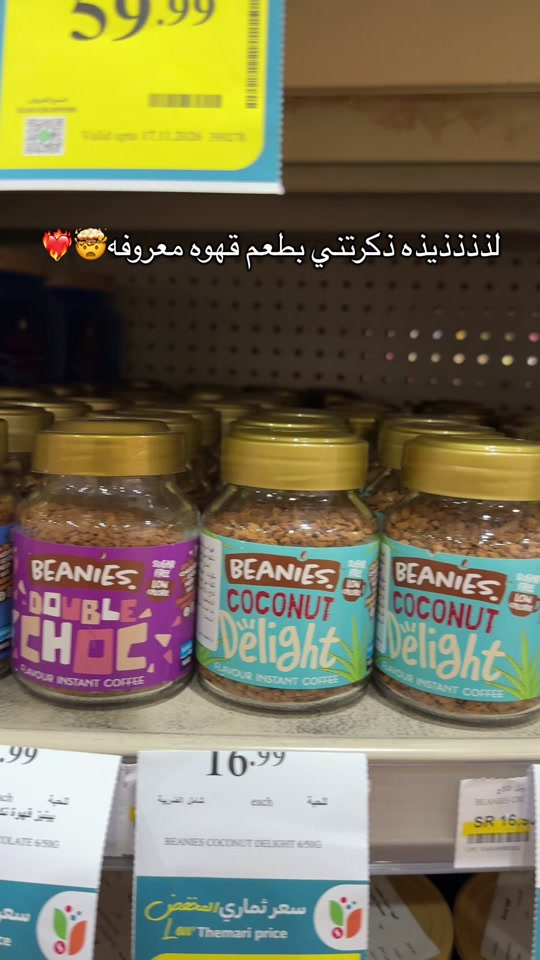

一份围绕 Ar Rayyan 新店展开的本地达人整合方案 —— 以三条内容线分别触达菲律宾社群、沙特甜品爱好者与利雅得茶饮消费者，把"新店开业"转化为"值得专程去一次"的真实理由。
本次客户的核心目标是推广最新开业的 Ar Rayyan 店。我们在实地走访与试吃后，发现两个值得放大的真实机会。
Ar Rayyan 是鹊茶在利雅得的第 4 家门店，也是目前唯一同时提供奶茶、果茶、沙冰、甜品与麻辣烫的门店。新店发现本身就是一个天然的内容钩子。
实地观察发现，Ar Rayyan 新店所在区域有活跃的菲律宾人群。相比奶茶，麻辣烫更像一顿完整的餐食，更有能力让人专门跑一趟 —— 这是新店拉新最值得尝试的组合。
三位创作者承担三个不同任务。它们彼此独立，又共同构成"新店拉新 + 产品种草 + 品牌认知"的完整闭环。
新店拉新主力。麻辣烫提供"专程去吃一顿"的理由，柠檬茶则是吃辣时自然的搭配。内容围绕新店发现、自选食材、称重、汤底辣度、真实试吃与门店位置展开。
产品种草线。本地伙伴试吃后认为芒果大福口感新鲜清爽，很适合沙特消费者。这条线不只是说"鹊茶有甜品"，而是尝试建立一个清晰记忆点：Lucky Tea × Mango Desserts。
品牌与新店传播线。奶茶是鹊茶长期稳定的核心产品，这条线承担双重任务：让消费者认识这是一个值得尝试的中国茶饮品牌，同时带出"鹊茶在利雅得已有 4 家门店"的信息。
数据来自各账号近期真实公开内容。点击封面可查看代表视频，点击"查看主页"可核验账号。
这一条线我们刻意按社群契合度而非播放量选人。原因是新店拉新要的不是最大范围的曝光，而是真正能触达 Ar Rayyan 周边菲律宾社群、并已经在相关内容品类里发声的创作者。下方每位达人的代表视频，就是这种匹配的具体证据。



Angelica 以菲律宾语与粉丝直接对话，视频标题 "Sugod na mga kabayan"（出发吧，同胞们）就是社群内部的召唤 —— 受众高度垂直。
Mark 已自发拍过麻辣烫 food trip；Kamoro 长期制作 Pinoy street food 内容。麻辣烫与街头美食对他们不是陌生品类，而是持续在讲的题材。
三人的内容核心都是"菲律宾人在沙特的生活与去哪吃"，与 Ar Rayyan 新店所在区域的活跃社群高度重合 —— 从内容到到店的路径最短。



所有链接均指向真实 TikTok 页面，可逐条核验内容方向与社群属性。不同线的选人标准不同：菲律宾线以社群与内容匹配度为核心依据，播放数据不作为该线的筛选条件。
鹊茶目前在利雅得有 4 家门店，但并非每家都有麻辣烫。因此两条内容线必须使用不同的行动指引 —— 这是本次传播最关键的细节。
新店定位：Google Maps ↗ ｜ 现有门店：As Sulimaniyah · Al Hamra · Ar Rabi Square · Ar Rayyan（新）
我们建议为每位达人配置独立的优惠码，并尽可能追踪到店与外卖订单。
每人一个专属码，用于判断哪位达人真正带来了购买、哪条内容线更有效。具体优惠形式（折扣 / 满减 / 麻辣烫赠柠檬茶 / 加购优惠）需结合客户利润空间确认后再定。
* 上图为结构示意，实际码名与优惠形式待客户确认后确定。
清晰的成功标准与诚实的预期管理，是这份方案专业性的体现。
7 位达人构成第一轮核心 Campaign。它的价值不止于播放与互动，而在于为下一轮提供真实的决策依据。
三条线同时启动，观察哪个产品 × 人群 × 达人组合真正带来核销、到店、外卖订单与正面反馈。
不是平均增加所有达人，而是把预算重点投向 Wave 1 表现最好的 Product × Audience × Creator Direction。